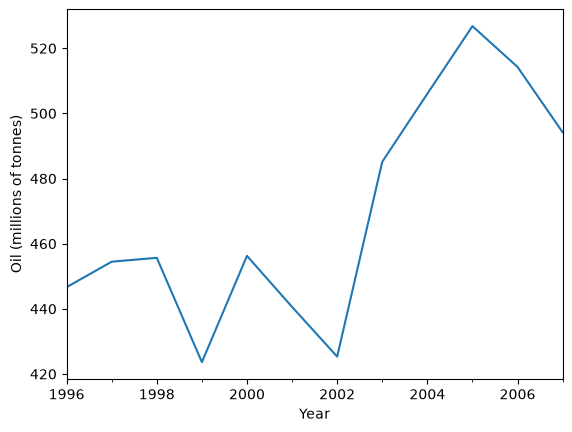
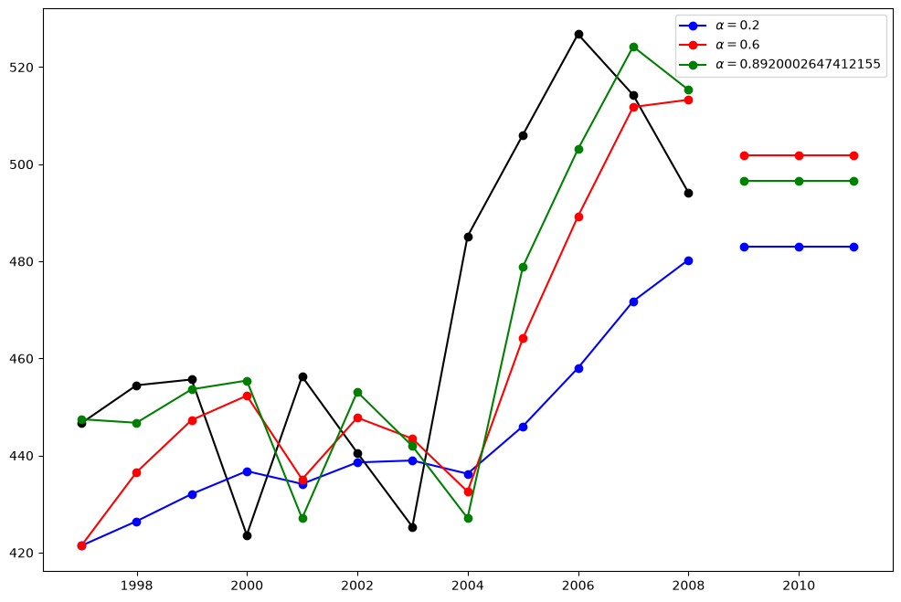
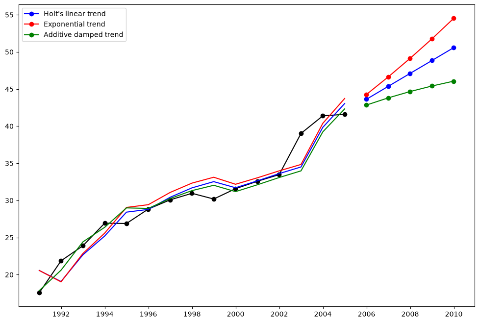
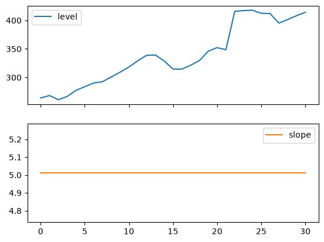
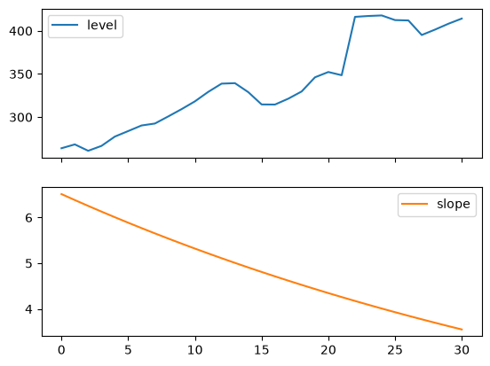
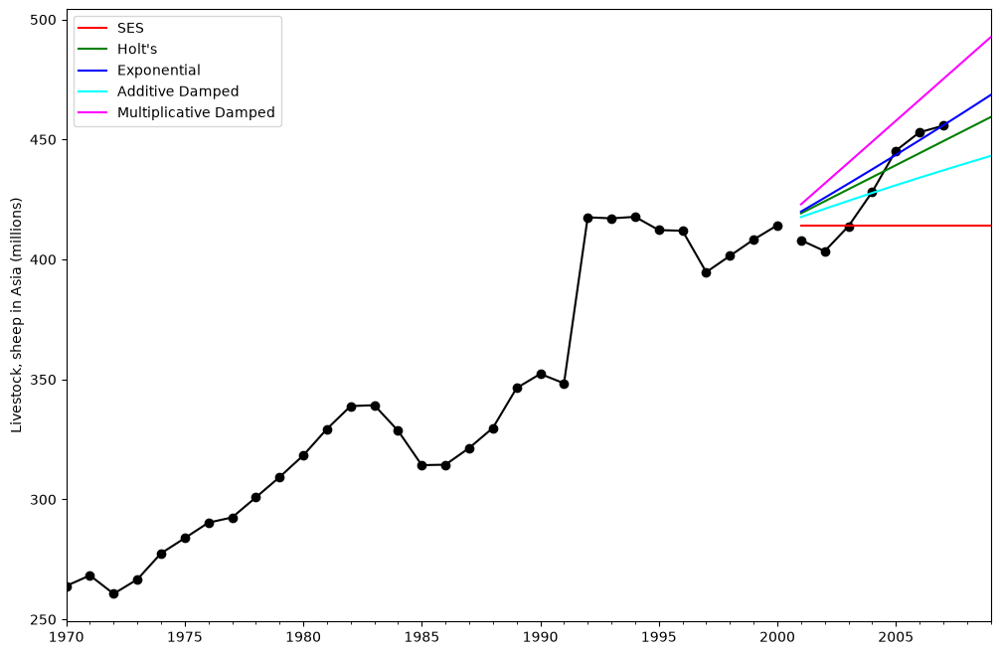
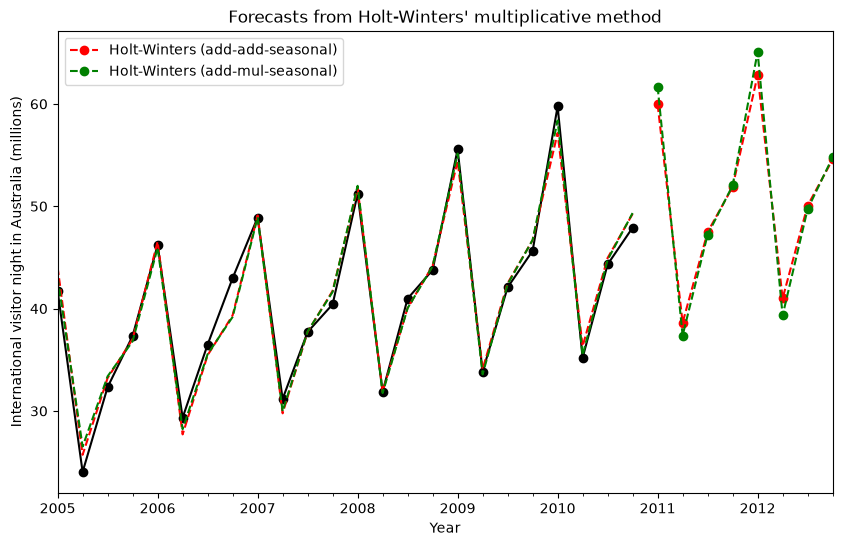
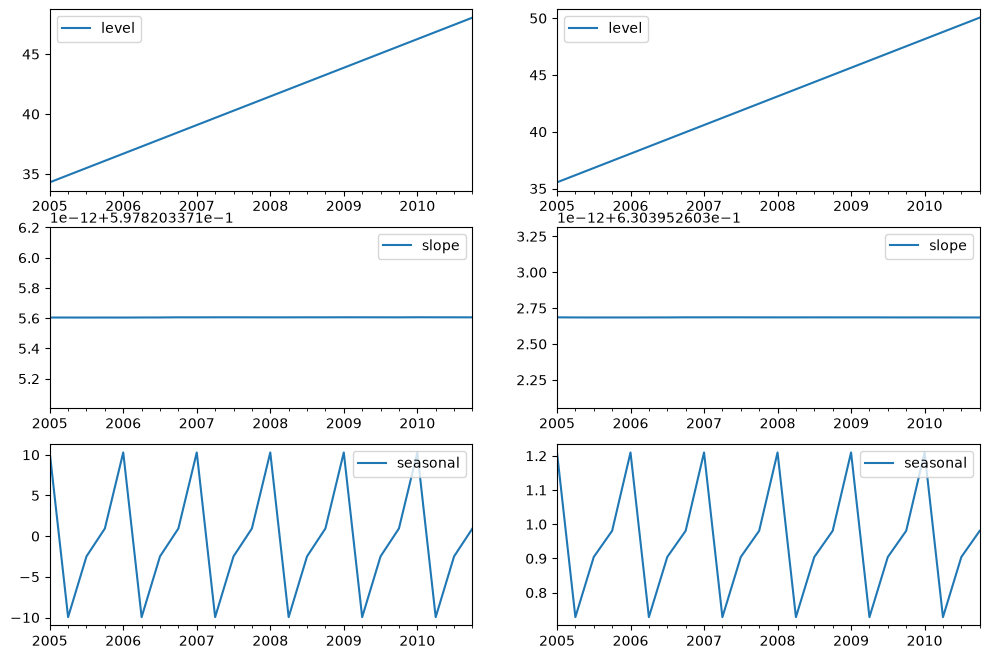
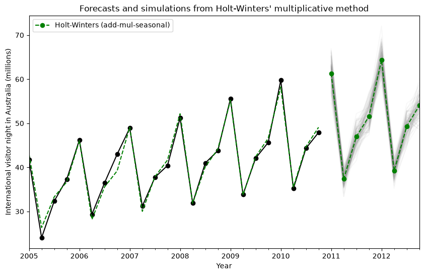
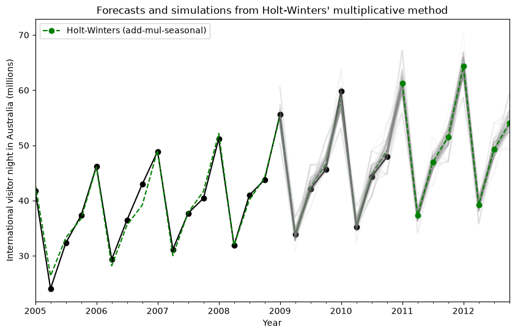

Exponential smoothing#
Let us consider chapter 7 of the excellent treatise on the subject of Exponential Smoothing By Hyndman and Athanasopoulos [1]. We will work through all the examples in the chapter as they unfold.
[1] Hyndman, Rob J., and George Athanasopoulos. Forecasting: principles and practice. OTexts, 2014.
Loading data#
First we load some data. We have included the R data in the notebook for expedience.
[1]:
import matplotlib.pyplot as plt
import numpy as np
import pandas as pd
from statsmodels.tsa.api import ExponentialSmoothing, Holt, SimpleExpSmoothing
%matplotlib inline
data = [
446.6565,
454.4733,
455.663,
423.6322,
456.2713,
440.5881,
425.3325,
485.1494,
506.0482,
526.792,
514.2689,
494.211,
]
index = pd.date_range(start="1996", end="2008", freq="YE")
oildata = pd.Series(data, index)
data = [
17.5534,
21.86,
23.8866,
26.9293,
26.8885,
28.8314,
30.0751,
30.9535,
30.1857,
31.5797,
32.5776,
33.4774,
39.0216,
41.3864,
41.5966,
]
index = pd.date_range(start="1990", end="2005", freq="YE")
air = pd.Series(data, index)
data = [
263.9177,
268.3072,
260.6626,
266.6394,
277.5158,
283.834,
290.309,
292.4742,
300.8307,
309.2867,
318.3311,
329.3724,
338.884,
339.2441,
328.6006,
314.2554,
314.4597,
321.4138,
329.7893,
346.3852,
352.2979,
348.3705,
417.5629,
417.1236,
417.7495,
412.2339,
411.9468,
394.6971,
401.4993,
408.2705,
414.2428,
]
index = pd.date_range(start="1970", end="2001", freq="YE")
livestock2 = pd.Series(data, index)
data = [407.9979, 403.4608, 413.8249, 428.105, 445.3387, 452.9942, 455.7402]
index = pd.date_range(start="2001", end="2008", freq="YE")
livestock3 = pd.Series(data, index)
data = [
41.7275,
24.0418,
32.3281,
37.3287,
46.2132,
29.3463,
36.4829,
42.9777,
48.9015,
31.1802,
37.7179,
40.4202,
51.2069,
31.8872,
40.9783,
43.7725,
55.5586,
33.8509,
42.0764,
45.6423,
59.7668,
35.1919,
44.3197,
47.9137,
]
index = pd.date_range(start="2005", end="2010-Q4", freq="QS-OCT")
aust = pd.Series(data, index=index)
Simple Exponential Smoothing#
Lets use Simple Exponential Smoothing to forecast the below oil data.
[2]:
ax = oildata.plot()
ax.set_xlabel("Year")
ax.set_ylabel("Oil (millions of tonnes)")
print("Figure 7.1: Oil production in Saudi Arabia from 1996 to 2007.")
Figure 7.1: Oil production in Saudi Arabia from 1996 to 2007.

Here we run three variants of simple exponential smoothing:
In
fit1we do not use the auto optimization but instead choose to explicitly provide the model with the \(\alpha=0.2\) parameterIn
fit2as above we choose an \(\alpha=0.6\)In
fit3we allow statsmodels to automatically find an optimized \(\alpha\) value for us. This is the recommended approach.
[3]:
fit1 = SimpleExpSmoothing(oildata, initialization_method="heuristic").fit(
smoothing_level=0.2, optimized=False
)
fcast1 = fit1.forecast(3).rename(r"$\alpha=0.2$")
fit2 = SimpleExpSmoothing(oildata, initialization_method="heuristic").fit(
smoothing_level=0.6, optimized=False
)
fcast2 = fit2.forecast(3).rename(r"$\alpha=0.6$")
fit3 = SimpleExpSmoothing(oildata, initialization_method="estimated").fit()
fcast3 = fit3.forecast(3).rename(r"$\alpha=%s$" % fit3.model.params["smoothing_level"])
plt.figure(figsize=(12, 8))
plt.plot(oildata, marker="o", color="black")
plt.plot(fit1.fittedvalues, marker="o", color="blue")
(line1,) = plt.plot(fcast1, marker="o", color="blue")
plt.plot(fit2.fittedvalues, marker="o", color="red")
(line2,) = plt.plot(fcast2, marker="o", color="red")
plt.plot(fit3.fittedvalues, marker="o", color="green")
(line3,) = plt.plot(fcast3, marker="o", color="green")
plt.legend([line1, line2, line3], [fcast1.name, fcast2.name, fcast3.name])
[3]:
<matplotlib.legend.Legend at 0x7f8ffb8d4050>

Holt’s Method#
Lets take a look at another example. This time we use air pollution data and the Holt’s Method. We will fit three examples again.
In
fit1we again choose not to use the optimizer and provide explicit values for \(\alpha=0.8\) and \(\beta=0.2\)In
fit2we do the same as infit1but choose to use an exponential model rather than a Holt’s additive model.In
fit3we used a damped versions of the Holt’s additive model but allow the dampening parameter \(\phi\) to be optimized while fixing the values for \(\alpha=0.8\) and \(\beta=0.2\)
[4]:
fit1 = Holt(air, initialization_method="estimated").fit(
smoothing_level=0.8, smoothing_trend=0.2, optimized=False
)
fcast1 = fit1.forecast(5).rename("Holt's linear trend")
fit2 = Holt(air, exponential=True, initialization_method="estimated").fit(
smoothing_level=0.8, smoothing_trend=0.2, optimized=False
)
fcast2 = fit2.forecast(5).rename("Exponential trend")
fit3 = Holt(air, damped_trend=True, initialization_method="estimated").fit(
smoothing_level=0.8, smoothing_trend=0.2
)
fcast3 = fit3.forecast(5).rename("Additive damped trend")
plt.figure(figsize=(12, 8))
plt.plot(air, marker="o", color="black")
plt.plot(fit1.fittedvalues, color="blue")
(line1,) = plt.plot(fcast1, marker="o", color="blue")
plt.plot(fit2.fittedvalues, color="red")
(line2,) = plt.plot(fcast2, marker="o", color="red")
plt.plot(fit3.fittedvalues, color="green")
(line3,) = plt.plot(fcast3, marker="o", color="green")
plt.legend([line1, line2, line3], [fcast1.name, fcast2.name, fcast3.name])
[4]:
<matplotlib.legend.Legend at 0x7f8ff72802f0>

Seasonally adjusted data#
Lets look at some seasonally adjusted livestock data. We fit five Holt’s models. The below table allows us to compare results when we use exponential versus additive and damped versus non-damped.
Note: fit4 does not allow the parameter \(\phi\) to be optimized by providing a fixed value of \(\phi=0.98\)
[5]:
fit1 = SimpleExpSmoothing(livestock2, initialization_method="estimated").fit()
fit2 = Holt(livestock2, initialization_method="estimated").fit()
fit3 = Holt(livestock2, exponential=True, initialization_method="estimated").fit()
fit4 = Holt(livestock2, damped_trend=True, initialization_method="estimated").fit(
damping_trend=0.98
)
fit5 = Holt(
livestock2, exponential=True, damped_trend=True, initialization_method="estimated"
).fit()
params = [
"smoothing_level",
"smoothing_trend",
"damping_trend",
"initial_level",
"initial_trend",
]
results = pd.DataFrame(
index=[r"$\alpha$", r"$\beta$", r"$\phi$", r"$l_0$", "$b_0$", "SSE"],
columns=["SES", "Holt's", "Exponential", "Additive", "Multiplicative"],
)
results["SES"] = [fit1.params[p] for p in params] + [fit1.sse]
results["Holt's"] = [fit2.params[p] for p in params] + [fit2.sse]
results["Exponential"] = [fit3.params[p] for p in params] + [fit3.sse]
results["Additive"] = [fit4.params[p] for p in params] + [fit4.sse]
results["Multiplicative"] = [fit5.params[p] for p in params] + [fit5.sse]
results
[5]:
| SES | Holt's | Exponential | Additive | Multiplicative | |
|---|---|---|---|---|---|
| $\alpha$ | 1.000000 | 0.974306 | 0.977633 | 0.978849 | 0.974910 |
| $\beta$ | NaN | 0.000000 | 0.000000 | 0.000000 | 0.000000 |
| $\phi$ | NaN | NaN | NaN | 0.980000 | 0.981646 |
| $l_0$ | 263.917719 | 258.882629 | 260.341566 | 257.357767 | 258.951801 |
| $b_0$ | NaN | 5.010792 | 1.013780 | 6.644556 | 1.038144 |
| SSE | 6761.350235 | 6004.138200 | 6104.194746 | 6036.555004 | 6081.995045 |
Plots of Seasonally Adjusted Data#
The following plots allow us to evaluate the level and slope/trend components of the above table’s fits.
[6]:
for fit in [fit2, fit4]:
pd.DataFrame(np.c_[fit.level, fit.trend]).rename(
columns={0: "level", 1: "slope"}
).plot(subplots=True)
plt.show()
print(
"Figure 7.4: Level and slope components for Holt’s linear trend method and the additive damped trend method."
)


Figure 7.4: Level and slope components for Holt’s linear trend method and the additive damped trend method.
Comparison#
Here we plot a comparison Simple Exponential Smoothing and Holt’s Methods for various additive, exponential and damped combinations. All of the models parameters will be optimized by statsmodels.
[7]:
fit1 = SimpleExpSmoothing(livestock2, initialization_method="estimated").fit()
fcast1 = fit1.forecast(9).rename("SES")
fit2 = Holt(livestock2, initialization_method="estimated").fit()
fcast2 = fit2.forecast(9).rename("Holt's")
fit3 = Holt(livestock2, exponential=True, initialization_method="estimated").fit()
fcast3 = fit3.forecast(9).rename("Exponential")
fit4 = Holt(livestock2, damped_trend=True, initialization_method="estimated").fit(
damping_trend=0.98
)
fcast4 = fit4.forecast(9).rename("Additive Damped")
fit5 = Holt(
livestock2, exponential=True, damped_trend=True, initialization_method="estimated"
).fit()
fcast5 = fit5.forecast(9).rename("Multiplicative Damped")
ax = livestock2.plot(color="black", marker="o", figsize=(12, 8))
livestock3.plot(ax=ax, color="black", marker="o", legend=False)
fcast1.plot(ax=ax, color="red", legend=True)
fcast2.plot(ax=ax, color="green", legend=True)
fcast3.plot(ax=ax, color="blue", legend=True)
fcast4.plot(ax=ax, color="cyan", legend=True)
fcast5.plot(ax=ax, color="magenta", legend=True)
ax.set_ylabel("Livestock, sheep in Asia (millions)")
plt.show()
print(
"Figure 7.5: Forecasting livestock, sheep in Asia: comparing forecasting performance of non-seasonal methods."
)

Figure 7.5: Forecasting livestock, sheep in Asia: comparing forecasting performance of non-seasonal methods.
Holt’s Winters Seasonal#
Finally we are able to run full Holt’s Winters Seasonal Exponential Smoothing including a trend component and a seasonal component. statsmodels allows for all the combinations including as shown in the examples below:
fit1additive trend, additive seasonal of periodseason_length=4and the use of a Box-Cox transformation.fit2additive trend, multiplicative seasonal of periodseason_length=4and the use of a Box-Cox transformation..fit3additive damped trend, additive seasonal of periodseason_length=4and the use of a Box-Cox transformation.fit4additive damped trend, multiplicative seasonal of periodseason_length=4and the use of a Box-Cox transformation.
The plot shows the results and forecast for fit1 and fit2. The table allows us to compare the results and parameterizations.
[8]:
fit1 = ExponentialSmoothing(
aust,
seasonal_periods=4,
trend="add",
seasonal="add",
use_boxcox=True,
initialization_method="estimated",
).fit()
fit2 = ExponentialSmoothing(
aust,
seasonal_periods=4,
trend="add",
seasonal="mul",
use_boxcox=True,
initialization_method="estimated",
).fit()
fit3 = ExponentialSmoothing(
aust,
seasonal_periods=4,
trend="add",
seasonal="add",
damped_trend=True,
use_boxcox=True,
initialization_method="estimated",
).fit()
fit4 = ExponentialSmoothing(
aust,
seasonal_periods=4,
trend="add",
seasonal="mul",
damped_trend=True,
use_boxcox=True,
initialization_method="estimated",
).fit()
results = pd.DataFrame(
index=[r"$\alpha$", r"$\beta$", r"$\phi$", r"$\gamma$", r"$l_0$", "$b_0$", "SSE"]
)
params = [
"smoothing_level",
"smoothing_trend",
"damping_trend",
"smoothing_seasonal",
"initial_level",
"initial_trend",
]
results["Additive"] = [fit1.params[p] for p in params] + [fit1.sse]
results["Multiplicative"] = [fit2.params[p] for p in params] + [fit2.sse]
results["Additive Dam"] = [fit3.params[p] for p in params] + [fit3.sse]
results["Multiplica Dam"] = [fit4.params[p] for p in params] + [fit4.sse]
ax = aust.plot(
figsize=(10, 6),
marker="o",
color="black",
title="Forecasts from Holt-Winters' multiplicative method",
)
ax.set_ylabel("International visitor night in Australia (millions)")
ax.set_xlabel("Year")
fit1.fittedvalues.plot(ax=ax, style="--", color="red")
fit2.fittedvalues.plot(ax=ax, style="--", color="green")
fit1.forecast(8).rename("Holt-Winters (add-add-seasonal)").plot(
ax=ax, style="--", marker="o", color="red", legend=True
)
fit2.forecast(8).rename("Holt-Winters (add-mul-seasonal)").plot(
ax=ax, style="--", marker="o", color="green", legend=True
)
plt.show()
print(
"Figure 7.6: Forecasting international visitor nights in Australia using Holt-Winters method with both additive and multiplicative seasonality."
)
results

Figure 7.6: Forecasting international visitor nights in Australia using Holt-Winters method with both additive and multiplicative seasonality.
[8]:
| Additive | Multiplicative | Additive Dam | Multiplica Dam | |
|---|---|---|---|---|
| $\alpha$ | 1.490116e-08 | 1.490116e-08 | 1.490116e-08 | 1.490116e-08 |
| $\beta$ | 1.479706e-08 | 1.480632e-08 | 6.360111e-09 | 4.920078e-09 |
| $\phi$ | NaN | NaN | 9.430362e-01 | 9.536081e-01 |
| $\gamma$ | 0.000000e+00 | 0.000000e+00 | 0.000000e+00 | 0.000000e+00 |
| $l_0$ | 1.119347e+01 | 1.140986e+01 | 1.084019e+01 | 1.142927e+01 |
| $b_0$ | 1.205403e-01 | 1.236509e-01 | 2.456902e-01 | 2.280611e-01 |
| SSE | 4.402741e+01 | 3.611258e+01 | 3.527644e+01 | 3.062012e+01 |
The Internals#
It is possible to get at the internals of the Exponential Smoothing models.
Here we show some tables that allow you to view side by side the original values \(y_t\), the level \(l_t\), the trend \(b_t\), the season \(s_t\) and the fitted values \(\hat{y}_t\). Note that these values only have meaningful values in the space of your original data if the fit is performed without a Box-Cox transformation.
[9]:
fit1 = ExponentialSmoothing(
aust,
seasonal_periods=4,
trend="add",
seasonal="add",
initialization_method="estimated",
).fit()
fit2 = ExponentialSmoothing(
aust,
seasonal_periods=4,
trend="add",
seasonal="mul",
initialization_method="estimated",
).fit()
[10]:
df = pd.DataFrame(
np.c_[aust, fit1.level, fit1.trend, fit1.season, fit1.fittedvalues],
columns=[r"$y_t$", r"$l_t$", r"$b_t$", r"$s_t$", r"$\hat{y}_t$"],
index=aust.index,
)
forecasts = fit1.forecast(8).rename(r"$\hat{y}_t$").to_frame()
df = pd.concat([df, forecasts], axis=0, sort=True)
[11]:
df = pd.DataFrame(
np.c_[aust, fit2.level, fit2.trend, fit2.season, fit2.fittedvalues],
columns=[r"$y_t$", r"$l_t$", r"$b_t$", r"$s_t$", r"$\hat{y}_t$"],
index=aust.index,
)
forecasts = fit2.forecast(8).rename(r"$\hat{y}_t$").to_frame()
df = pd.concat([df, forecasts], axis=0, sort=True)
Finally lets look at the levels, slopes/trends and seasonal components of the models.
[12]:
states1 = pd.DataFrame(
np.c_[fit1.level, fit1.trend, fit1.season],
columns=["level", "slope", "seasonal"],
index=aust.index,
)
states2 = pd.DataFrame(
np.c_[fit2.level, fit2.trend, fit2.season],
columns=["level", "slope", "seasonal"],
index=aust.index,
)
fig, [[ax1, ax4], [ax2, ax5], [ax3, ax6]] = plt.subplots(3, 2, figsize=(12, 8))
states1[["level"]].plot(ax=ax1)
states1[["slope"]].plot(ax=ax2)
states1[["seasonal"]].plot(ax=ax3)
states2[["level"]].plot(ax=ax4)
states2[["slope"]].plot(ax=ax5)
states2[["seasonal"]].plot(ax=ax6)
plt.show()

Simulations and Confidence Intervals#
By using a state space formulation, we can perform simulations of future values. The mathematical details are described in Hyndman and Athanasopoulos [2] and in the documentation of HoltWintersResults.simulate.
Similar to the example in [2], we use the model with additive trend, multiplicative seasonality, and multiplicative error. We simulate up to 8 steps into the future, and perform 1000 simulations. As can be seen in the below figure, the simulations match the forecast values quite well.
[13]:
fit = ExponentialSmoothing(
aust,
seasonal_periods=4,
trend="add",
seasonal="mul",
initialization_method="estimated",
).fit()
simulations = fit.simulate(8, repetitions=100, error="mul")
ax = aust.plot(
figsize=(10, 6),
marker="o",
color="black",
title="Forecasts and simulations from Holt-Winters' multiplicative method",
)
ax.set_ylabel("International visitor night in Australia (millions)")
ax.set_xlabel("Year")
fit.fittedvalues.plot(ax=ax, style="--", color="green")
simulations.plot(ax=ax, style="-", alpha=0.05, color="grey", legend=False)
fit.forecast(8).rename("Holt-Winters (add-mul-seasonal)").plot(
ax=ax, style="--", marker="o", color="green", legend=True
)
plt.show()

Simulations can also be started at different points in time, and there are multiple options for choosing the random noise.
[14]:
fit = ExponentialSmoothing(
aust,
seasonal_periods=4,
trend="add",
seasonal="mul",
initialization_method="estimated",
).fit()
simulations = fit.simulate(
16, anchor="2009-01-01", repetitions=100, error="mul", random_errors="bootstrap"
)
ax = aust.plot(
figsize=(10, 6),
marker="o",
color="black",
title="Forecasts and simulations from Holt-Winters' multiplicative method",
)
ax.set_ylabel("International visitor night in Australia (millions)")
ax.set_xlabel("Year")
fit.fittedvalues.plot(ax=ax, style="--", color="green")
simulations.plot(ax=ax, style="-", alpha=0.05, color="grey", legend=False)
fit.forecast(8).rename("Holt-Winters (add-mul-seasonal)").plot(
ax=ax, style="--", marker="o", color="green", legend=True
)
plt.show()
